Lecture 7.2 · 人工智能产业实践 · MBA / EMBA
提示词工程与智能体
AI 4.0 的下半场：
IN THIS LECTURE
PART 1 Prompt Engineering 提示词工程
PART 2 Agents 智能体
PART 3 Harness · from OpenClaw Harness：从 OpenClaw 讲起
PART 4 Innovators & Organizations 创新体与组织变革
常象宇 Xiangyu Chang
西安交通大学 管理学院
xiangyuchang@xjtu.edu.cn
L1 对话 L2 推理 L3 智能体 L4 创新体 L5 组织
已经落地 正在到来 OpenAI 五级进展框架（Bloomberg, 2024-07）
开场 · 引子
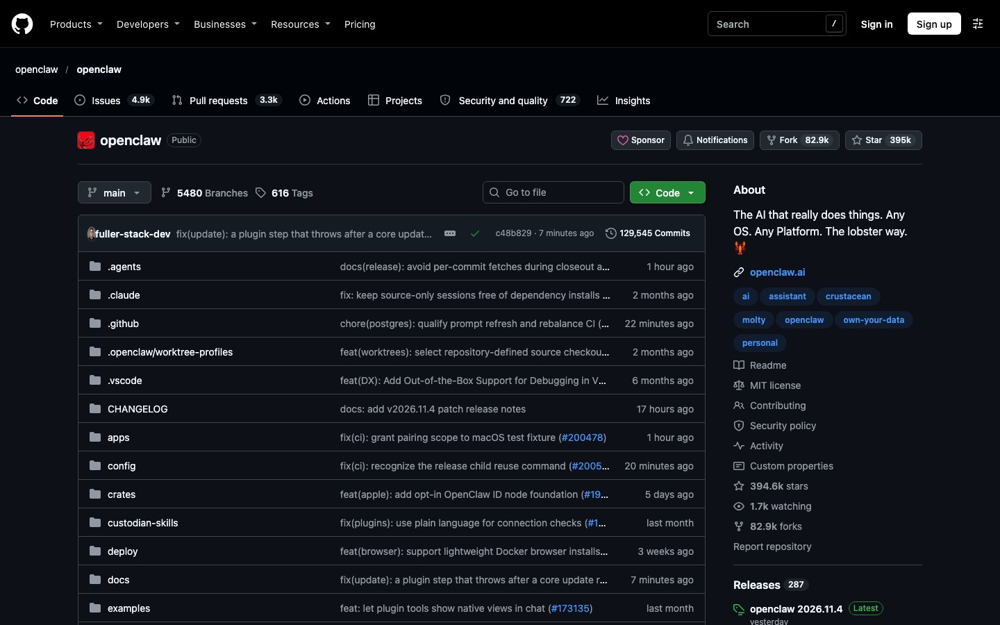
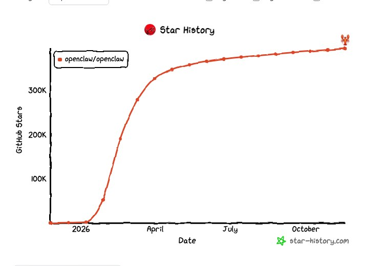
Star History（2026-10）：2026 年初陡升，之后持续爬坡 。
2025-11 → 2026-11
一个周末项目 ，
395K
GitHub Stars
88天
从建仓到 20 万星
这一讲想回答的问题 它不是更强的模型，为什么能让大厂集体跟进？模型之外的那一层 。
参考 GitHub openclaw/openclaw（2026-11-17 截图）；Star History；askgpu《OpenClaw 时间线》⚠ 二手汇编，创建/里程碑日期与 GitHub 记录一致
开场 · 本讲路线
四个部分，一条阶梯
PART 1 · L1–L2
怎样把能力 提示词工程
PART 2 · L3
智能体 五级阶梯 · 定义与解剖
PART 3 · L3 工程化
模型之外的 Harness：概念 · 案例
PART 4 · L4–L5
创新体与 RSI · Agent 团队
在课程中的位置：AI 4.0 · 预训练大模型 的下半场（接续 L7.1 大语言模型；下一讲 L8 智能产业实践）
参考 原 PPT P2 目录；OpenAI 五级框架（Bloomberg 2024-07-11）；本讲结构由课程重新设计，新增 Harness 与创新体/组织两部分
LECTURE 7.2 · 人工智能产业实践
01
PART 1
提示词工程
所有能力，都要用提示词激发：few-shot → CoT → 自洽 → 思维树 → ReAct → 上下文工程
1.1 能力：怎样被“问”出来
1.2 工程：怎样写好提示词
1.3 演进：从提示词到上下文
PART 1 · 1.1 能力
模型“有”能力，还要用提示词激发
ZERO-SHOT · 零样本
直接提问 不给任何案例，模型凭训练时压缩的世界知识 做初步判断。
L7.1 已讲：GPT-2 / GPT-3
FEW-SHOT · 少样本
结合案例 给一个案例，模型就学到案例 ——不改权重，学在提示里。
⚠ 依赖格式；案例有错，就学到错的
CoT · 思维链
有逻辑地想 每次输出都会变成下一步的上下文，写得详细，就推得更准 。
“Let’s think step by step.”
所有这些能力，必须通过提示词（Prompt） 激发！
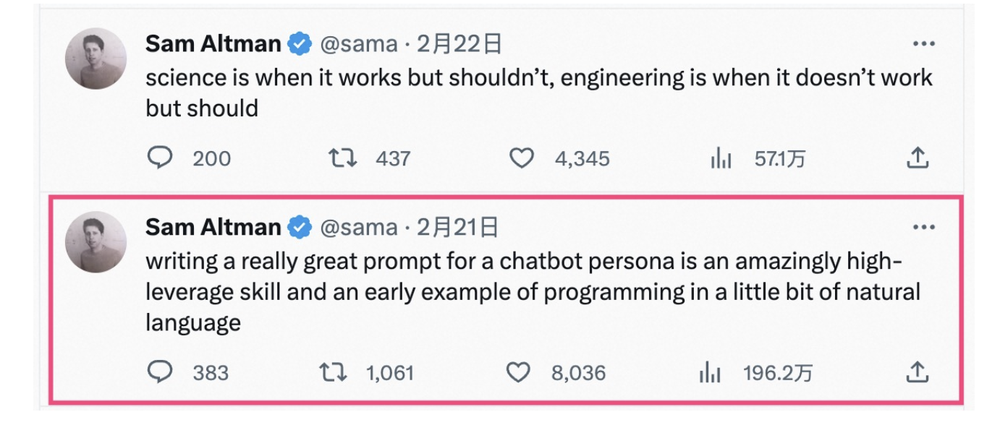
参考 原 PPT P7–P10、P14；机理与实测见 L7.1 Part 2；Wei et al., NeurIPS 2022（CoT 在大模型上稳定有效；2024 年后推理模型把 CoT 训练进模型）
PART 1 · 1.1 能力
示例会被原样学走
无示例 好示例 标签写反 格式不一致
⚠ 输出为教学示意，用来说明机理；真实模型的回答因模型与版本而异。
给示例 = 写规格
模型不会判断“你是不是故意的”。示例里的标签、格式、语气 都会成为它的规格。
用在管理场景
把一份审核过 的优秀客服回复、合同摘要作为示例，比写十条规则更稳。
参考 原 PPT P9（缺点：依赖案例的格式，案例有问题就学到有问题的描述）；Brown et al., NeurIPS 2020（GPT-3）
PART 1 · 1.1 能力
思维链是一条路，思维树 是一张图 Tree of Thoughts · NeurIPS 2023
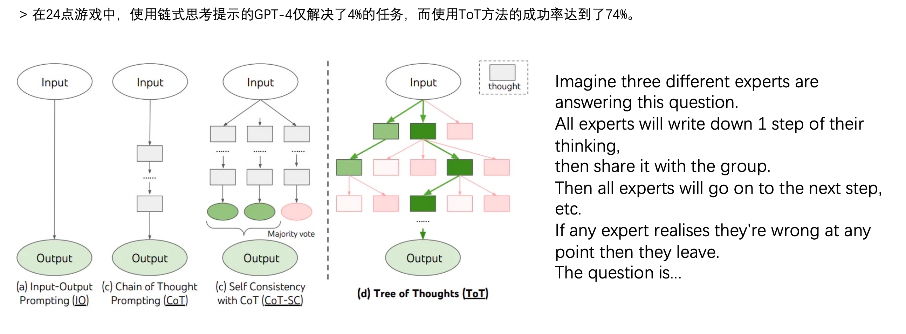
4% → 74%
GPT-4 做“24 点”：CoT vs ToT（论文报告）
参考 原 PPT P11；Yao et al., Tree of Thoughts: Deliberate Problem Solving with LLMs (NeurIPS 2023)，“Game of 24” 成功率 4% → 74%
PART 1 · 1.1 能力
同一道题，采样多条思维链
Q： 咖啡店一杯 18 元，“买 3 杯送 1 杯”。买 7 杯要付多少钱？
＋ 采样一条思维链 重置
论文结果（Wang et al., ICLR 2023）
GSM8K +17.9 · SVAMP +11.0 · AQuA +12.2 （相对 CoT 贪心解码，百分点）
原稿：重复运算多次，取概率最高的那一个，需要脚本辅助。代价：调用次数 × N。
参考 原 PPT P12；Wang et al., Self-Consistency Improves CoT Reasoning in Language Models (ICLR 2023)；示例题为教学自编，各条思维链为示意
PART 1 · 1.1 能力
ReAct = Reasoning + Acting
问题： Apple Remote 最初设计用来控制的那个软件，还能被哪种设备控制？
▶ 下一步 重置
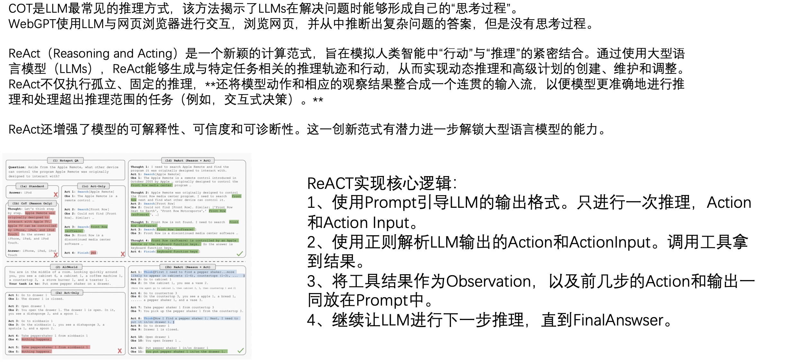
Thought → Action → Observation 想一步，调用一个工具 ，读回结果，再想。智能体循环 的雏形。
参考 原 PPT P13；Yao et al., ReAct: Synergizing Reasoning and Acting in Language Models (ICLR 2023)，示例取自论文 Fig. 1（HotpotQA）
PART 1 · 1.1 能力
从“问一次”到“让模型自己跑一个流程 ”
方法 做法 额外成本 适合 Zero-shot 直接提问 最低 常识问答、改写、摘要 Few-shot 提示里放几个示例 提示变长 固定格式、分类、风格模仿 CoT 要求写出推理步骤 输出变长 算术、逻辑、多步判断 Self-Consistency 多条 CoT，多数票 调用 × N 有唯一答案、可投票 ToT 多分支 + 评估 + 回溯 调用 × 很多 规划、搜索、创意探索 ReAct 思考 ↔ 调用工具循环 工具与延迟 需要外部信息或行动 → Agent
2024 年后：推理模型把 CoT 内置 （L7.1）——你不必再写“一步一步想”。
方法不会消失，而是从提示词长进了系统 ：ReAct → 智能体循环。
参考 原 PPT P8–P13 整理；成本列为课堂归纳，非统一基准
PART 1 · 1.2 提示词工程
Prompt 是你与模型沟通的方式
给 AI 模型的指令 ：一小段文本输入，用来引导模型生成特定回答或执行特定任务。
一个好的 Prompt，让 AI 更准确地理解需求 ，给出更有用的回答。
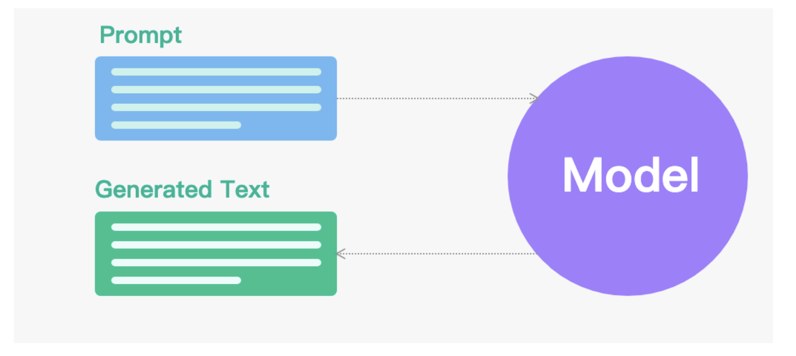
参考 原 PPT P16
PART 1 · 1.2 提示词工程
模型不是“理解”指令，逐词续写
文本 → 词向量 → 模型每次预测下一个词，并把它接回输入，直到结束或达到最大长度。
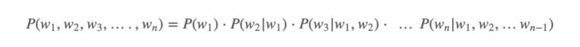
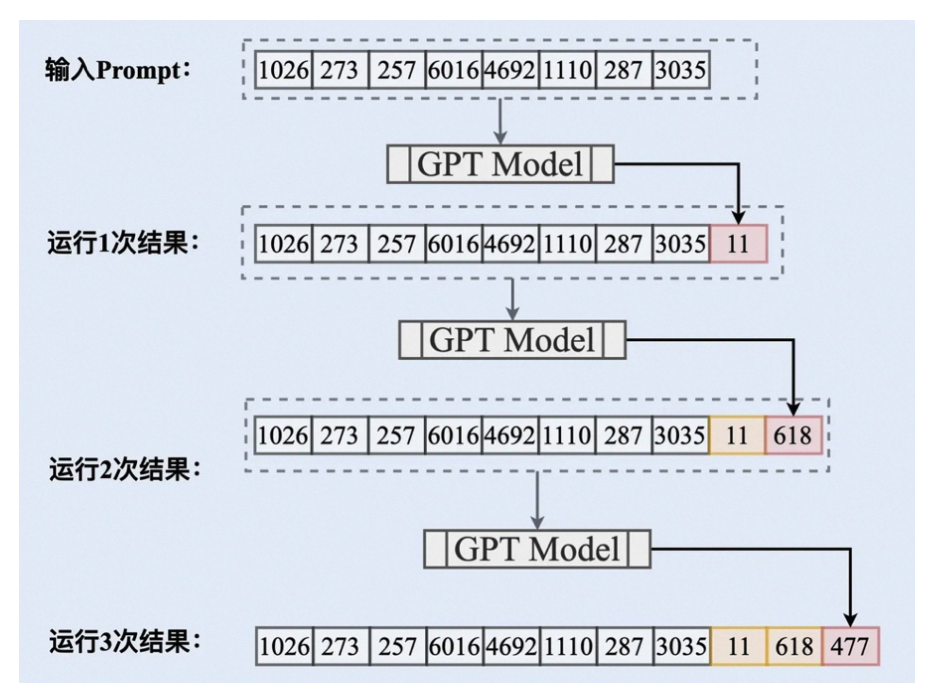
参考 原 PPT P17
PART 1 · 1.2 提示词工程
五条原则，逐条打开
① 明确目标 清晰定义任务
② 具体指导 给出约束
③ 简洁明了 去掉废话
④ 适当引导 示例或边界
⑤ 迭代优化 看输出再调
点击每条原则（可多选），观察右侧提示词怎样变化。
参考 原 PPT P18（明确目标 / 具体指导 / 简洁明了 / 适当引导 / 迭代优化）；示例为教学自编
PART 1 · 1.2 提示词工程
参考 原 PPT P19–P22（CO-STAR 框架截图）；CO-STAR 为新加坡 GovTech 提出的提示词模板（⚠ 出处据原 PPT 截图）
PART 1 · 1.2 提示词工程
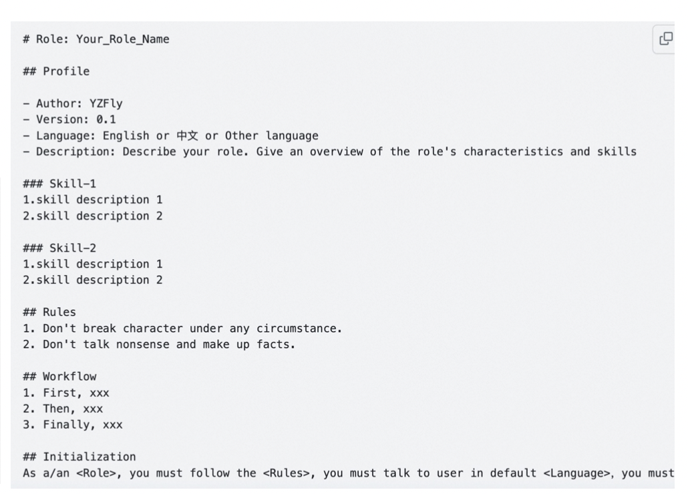
用 Markdown / JSON 构建提示词
角色 · 规则 · 工作流 · 初始化 结构清楚，模型更容易逐条遵守 ，人也更容易维护与复用 。
把能力嵌进去 few-shot 示例放进 Examples ；CoT 放进 Workflow ；指令放进 Rules 。
这份模板就是下一部分“智能体画像”的原型。
参考 原 PPT P21（Markdown 角色模板截图）
PART 1 · 1.2 提示词工程
提示词，成了一门手艺，也成了商品
比赛
新加坡 GPT-4 提示工程大赛冠军，其方法被总结为 CO-STAR 。
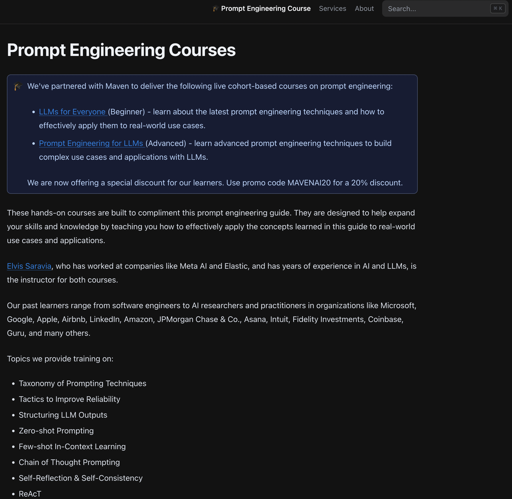
课程
Prompt Engineering Guide：promptingguide.ai/course 。
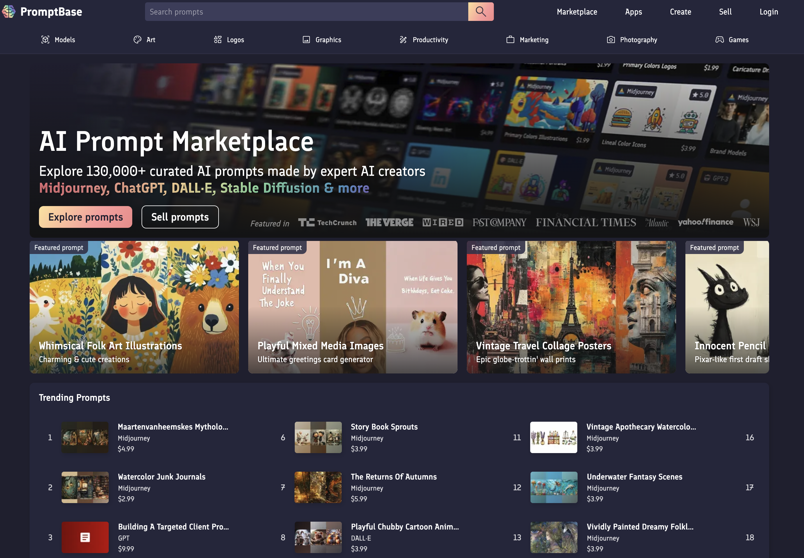
市场
PromptBase：promptbase.com ，提示词可以买卖。
参考 原 PPT P22–P24 截图（2023–2024 年所摄，页面现状未逐项复核）；promptingguide.ai；promptbase.com
PART 1 · 1.3 演进
提示词只是上下文的一小块
▶ Agent 再跑 1 轮 压缩（compaction） 重置
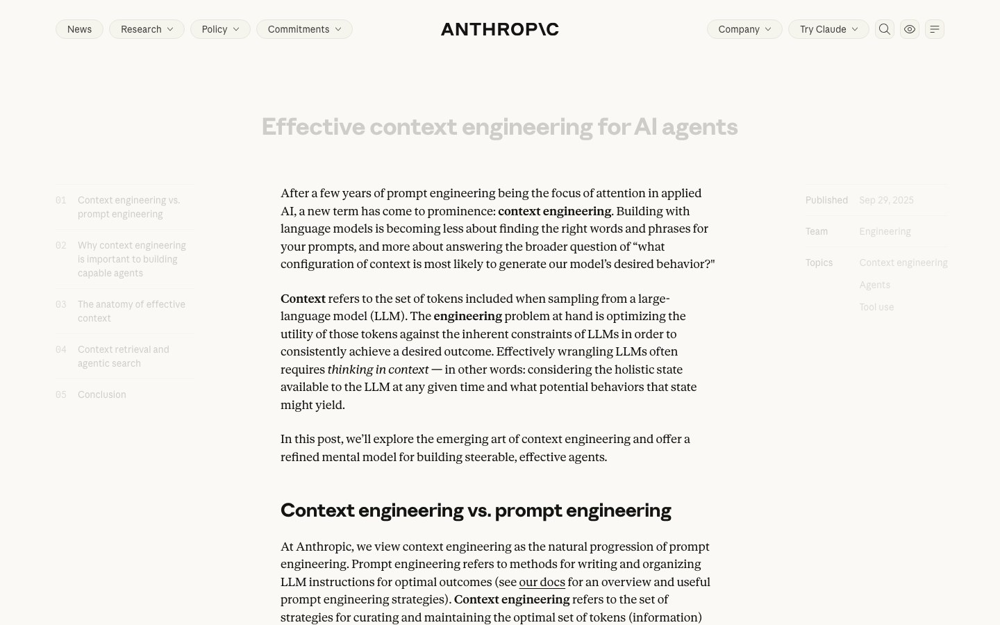
KARPATHY · 2025-06
上下文工程是“为下一步，把恰好合适的信息放进上下文窗口 ”的艺术与科学。
ANTHROPIC · 2025-09
提示词工程的自然演进 ：在多轮 Agent 里，持续挑选最小的高信号 上下文。
参考 Anthropic, Effective context engineering for AI agents (2025-09-29)；Karpathy 推文（2025-06）经 LangChain、Anthropic 引述；图中数值为教学示意，非实测
PART 1 · 小结
带走五句话
01 能力要靠提示词激发 ：zero-shot、few-shot、CoT 是基本功。
03 写清目标、约束、受众、格式 ；用 Markdown / JSON 结构化。
04 自洽、思维树、ReAct：把“想”和“做”组织成流程 。
05 多轮 Agent 里，提示词让位于上下文工程 ——这是下一部分。
参考 本讲 Part 1 整理
LECTURE 7.2 · 人工智能产业实践
02
PART 2
智能体
从“一问一答”，到“自主行动和决策”：五级阶梯里的第三级
2.1 为什么需要，是什么
2.2 四个层次与 1+3+3+1
2.3 多智能体
2.4 如何构建
PART 2 · 2.1 为什么需要，是什么
简单任务一问一答 ，复杂任务一步接一步
简单任务 · 一次搞定
“把这段话翻译成英文。”
复杂任务 · 例：“请教我写一篇毕业论文”
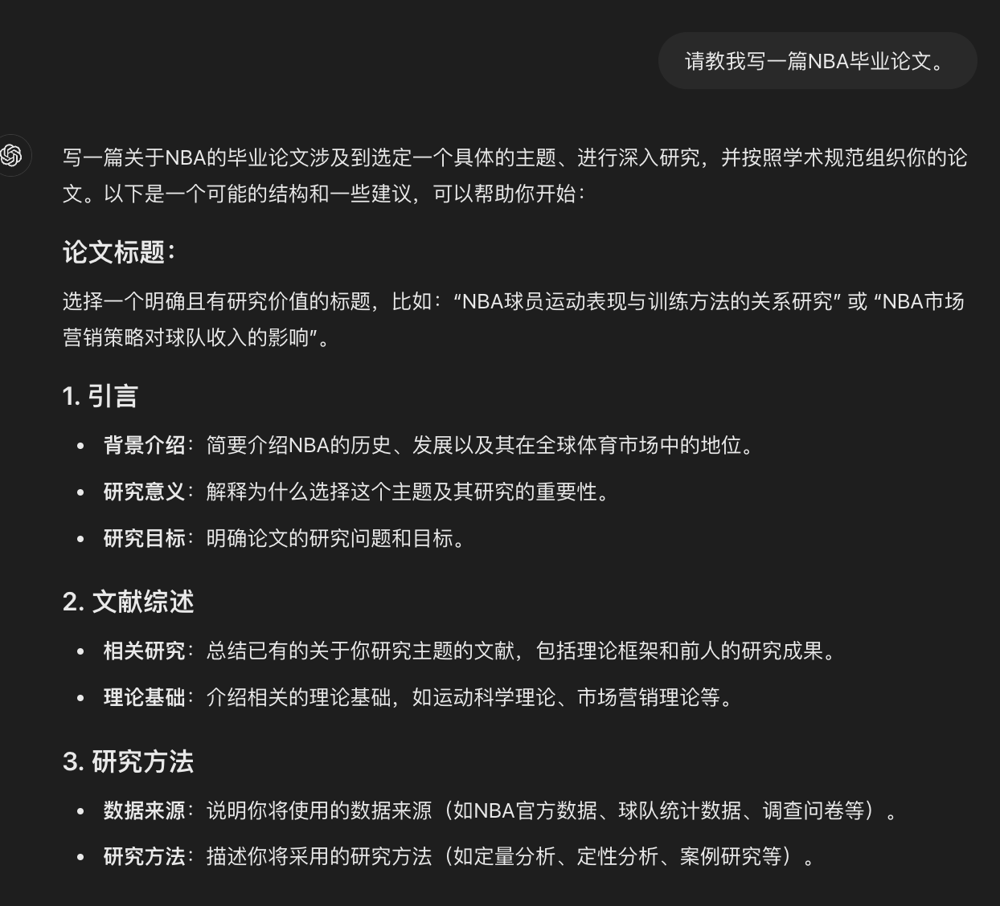
每一步依赖上一步 选题 → 文献 → 大纲 → 数据 → 写作
一次回答给不出来——需要能规划、调用工具、根据结果调整 的系统：智能体 。
参考 原 PPT P26（复杂任务难以简单完成；ChatGPT 回答截图）
PART 2 · 2.1 为什么需要，是什么
五级阶梯：智能体是第三级 OpenAI · 2024-07
L1 对话chatbot L2 推理reasoning L3 智能体agent L4 创新体innovation L5 组织organization
参考 原 PPT P27（AI 被定义的 5 个进化等级）；Bloomberg, OpenAI Sets Levels to Track Progress Toward Superintelligent AI (2024-07-11)；各级 2026 例证见后文 R 编号；“状态”为课程判断
PART 2 · 2.1 为什么需要，是什么
DEFINITION · AGENT
智能体 = 基础模型 + 画像 · 记忆 · 规划 · 知识与工具 · 对外交互
一句话：Agent 不是更大的聊天框，而是模型外围的一整套系统 ，能感知环境 → 规划 → 调用工具行动 → 根据反馈迭代。
参考 原 PPT P28（什么是 L3——智能体：基础模型、知识库+工具、智能体画像、记忆机制、任务理解规划）；架构图为课程自制（常象宇），与 L1 同图
PART 2 · 2.1 为什么需要，是什么
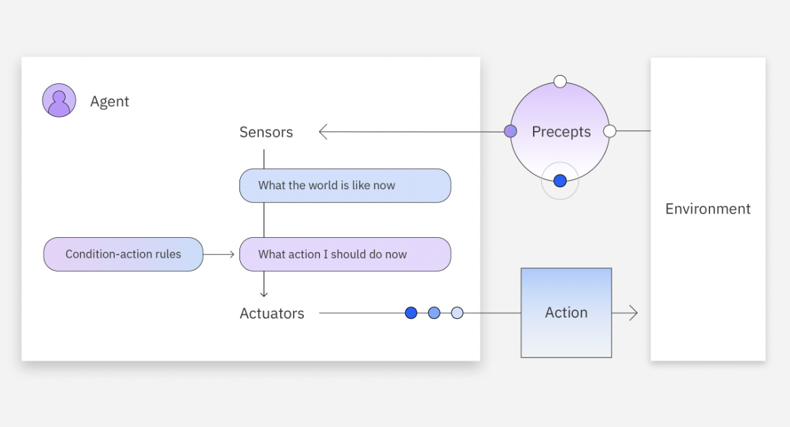
感知 → 决策 → 行动 ，再感知
主动感知 不是等你喂材料，而是自己去读文件、查网页、看屏幕 。
探索世界 行动会改变环境，环境的变化又是下一步的输入 ——这是闭环。
参考 原 PPT P30（智能体与外部环境交互）；经典 agent 框架：传感器—执行器—环境
PART 2 · 2.2 四个层次与 1+3+3+1
同一个“MBA 导师”，四种做法
① 单一任务智能体 ② 智能体工作流 ③ 真智能体 ④ 多智能体
参考 原 PPT P29；与 Anthropic《Building effective agents》(2024-12) 的“workflow 与 agent”区分相呼应：workflow 由预定义代码路径编排，agent 由模型自己决定流程
PART 2 · 2.2 四个层次与 1+3+3+1
1 + 3 + 3 + 1：构架自己的超级智能体 2023 原稿 2026 更新
参考 原 PPT P31（1 基础模型 + 3 项技术技能 + 3 项使用能力 + 个人知识库）；2026 列为课程更新（工具能力以 Agent 工具集、MCP、Skills 为代表）
PART 2 · 2.2 四个层次与 1+3+3+1
把“每年重复讲一遍 ”变成一个智能体
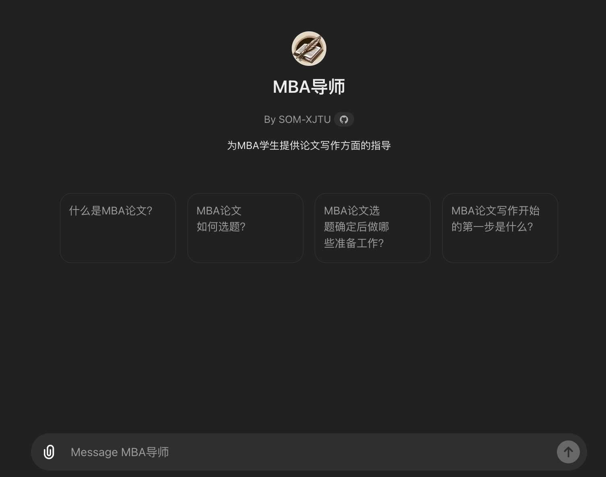
MBA 导师 痛点：学生不会写毕业论文，导师年年重复讲。提示：不代写，教学生写。
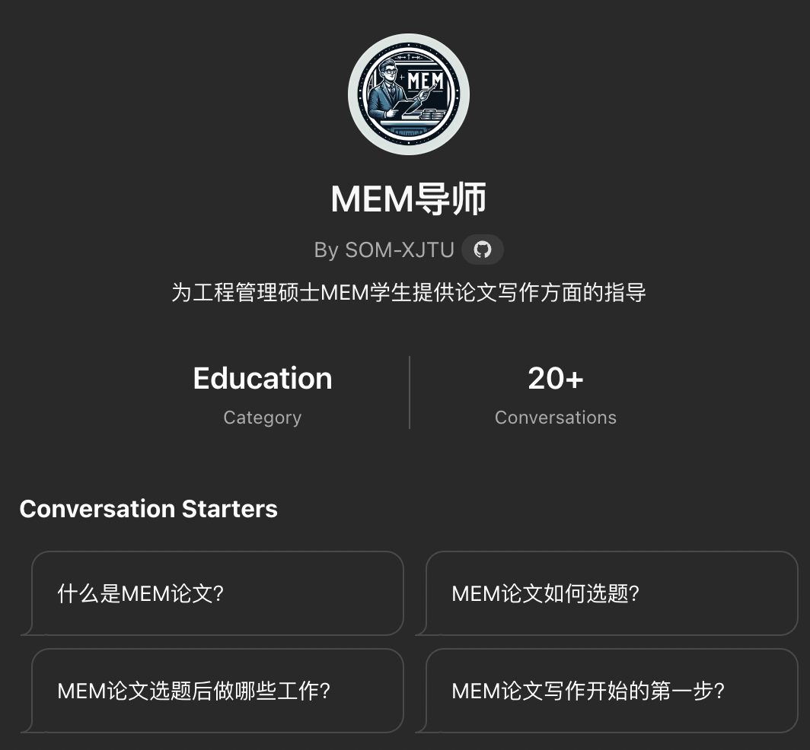
MEM 导师 同一套思路，换成工程管理硕士的论文与规范。
参考 原 PPT P32–P35（GPTs 商店与三个导师截图）；⚠ 原 GPTs 链接当前是否仍可用待主讲人核对
PART 2 · 2.2 四个层次与 1+3+3+1
同一个导师，三种打包方式
要素 GPTs（2023） 2026 的做法 角色与规则 系统指令 SKILL.md 方法手册知识 上传文件 references/ 资料目录 外部动作 Actions MCP 连接器运行位置 ChatGPT 内 任意 Harness （Claude Code / Codex / OpenClaw）
课堂做法：现场把“MBA 导师”从 GPTs 改写成一个 Skill ——只需一份说明书与一个资料目录。
Skills（方法手册）与 MCP（工具连接）：两种可复用、可分享 的 Agent 积木。
参考 沿用 L1 已核实的 Anthropic Skills / MCP 官方页面截图；映射表为课程归纳；本课不预先制作 Skill 文件，留课堂演示
PART 2 · 2.3 多智能体
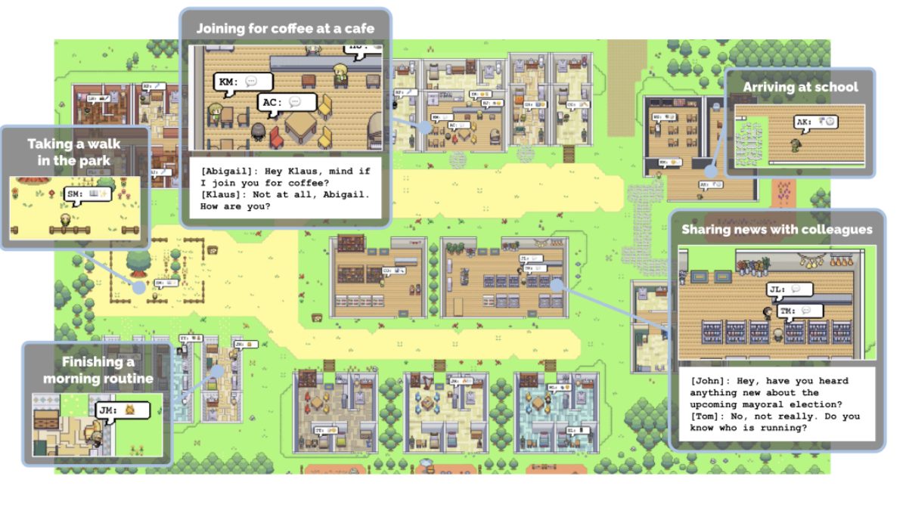
GENERATIVE AGENTS · UIST 2023
25 个居民，一个会涌现的小镇
记忆流 → 反思 → 规划 ：每个居民有自己的记忆与日程，彼此交谈。
没有人写剧本，却自发出现聚会邀请、传闻扩散 ——社会行为涌现。
参考 原 PPT P36；Park et al., Generative Agents: Interactive Simulacra of Human Behavior (UIST 2023, Stanford / Google)
PART 2 · 2.3 多智能体
AGENT HOSPITAL · 2024
一座全部由智能体 组成的医院
医生、护士、病人都是智能体；医生智能体在模拟接诊中不断积累经验 ，自我进化。
思路：先在模拟器里“练”，再进入真实世界 。管理含义：低成本地演练组织流程。
参考 原 PPT P37；Li et al., Agent Hospital: A Simulacrum of Hospital with Evolvable Medical Agents (清华大学等，arXiv:2405.02957)
PART 2 · 2.3 多智能体
五个智能体，按 PCS 协作 Stat · 2026
PCS-Agent · 全程监督：扰动分析 · 单元测试 · 可复现检查
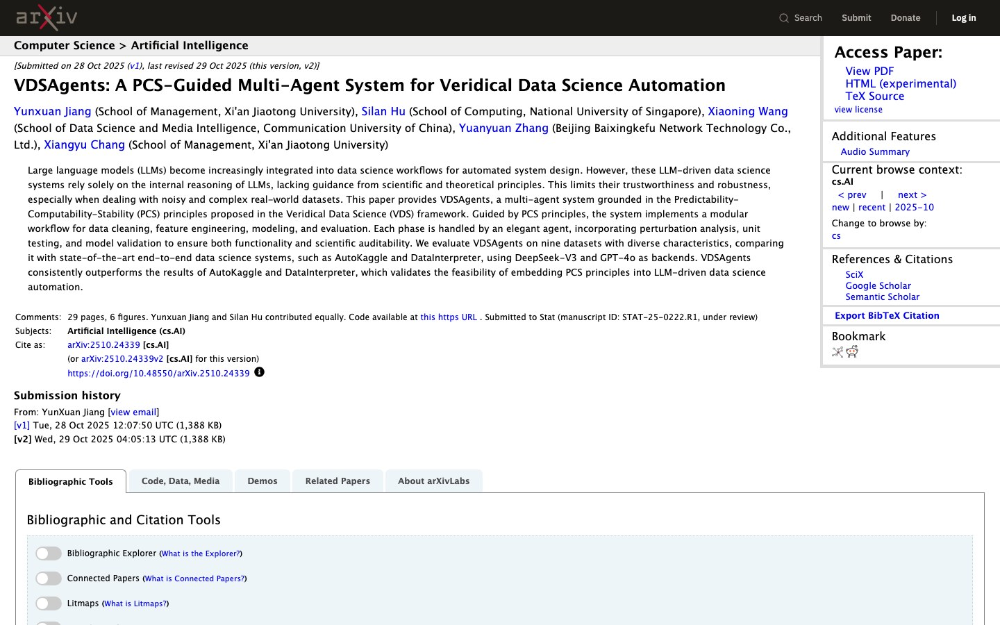
在 9 个数据集上，执行稳定性优于 AutoKaggle 与 Data Interpreter （DeepSeek-V3 / GPT-4o 后端）。
本课题组工作：Jiang, Hu, Wang, Zhang, Chang。代码：github.com/fengzer/VDSAgents
参考 原 PPT P38–P39；Jiang et al., VDSAgents: A PCS-Guided Multi-Agent System for Veridical Data Science Automation, arXiv:2510.24339；Stat (Wiley) 2026, doi:10.1002/sta4.70126
PART 2 · 2.4 如何构建
以 MBA 论文导师 为例
① 角色：提示词模板
② 工具：插件 / MCP
③ 知识库：资料与规范
④ 工作流：步骤编排
⑤ 记忆：长期与短期
⑥ 评估：上线前的测试
参考 原 PPT P40–P52 的构建步骤（提示词模板、插件工具、知识库、工作流、长短期记忆），改为与平台无关的通用流程；示例内容为教学自编
PART 2 · 小结
智能体已经能做出来 ……
L3 ：自主行动和决策；四个层次 从单任务到多智能体。
1+3+3+1 与六步构建：角色、工具、知识、流程、记忆、评估。
多智能体 ：小镇、医院、数据科学团队——分工 + 监督。
谁来管理上下文、工具、权限、重试和验证？模型之外的那一层 → Harness
参考 本讲 Part 2 整理
LECTURE 7.2 · 人工智能产业实践
03
PART 3
Harness
从 OpenClaw 讲起：模型之外的那一层，决定智能体做得稳不稳
3.1 案例：OpenClaw
3.2 概念：Agent = Model + Harness
3.3 新闻：龙虾热与安全
3.4 项目与公司
PART 3 · 3.1 案例：OpenClaw
参考 OpenClaw GitHub / 官方博客 / 基金会公告；Star History；Axios；Wiz；36 氪；⚠ 星标数与日期以公开页面截图为准，部分日期（Moltbot 改名）各来源差 1–2 天
PART 3 · 3.1 案例：OpenClaw
模型是可换的 ，其余都是 Harness
入口 Channels
微信 / 飞书
Telegram
WhatsApp
→
⇄
模型 Model
Claude
GPT
DeepSeek…
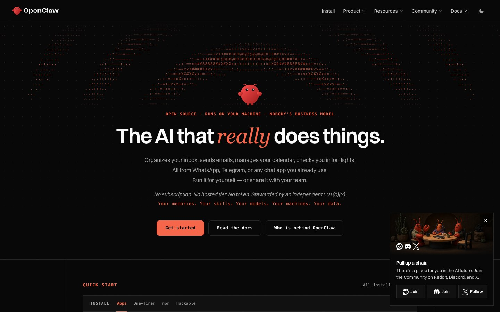
参考 OpenClaw 官网与文档（Gateway / Skills / SOUL.md、MEMORY.md 等工作区文件）；结构图为课程简化示意，⚠ 具体文件名与版本以官方文档为准
PART 3 · 3.2 概念
CONCEPT
Agent Model + Harness
Codex 负责人 Michael Bolin：harness = 智能体循环 + 工具 + 沙箱 + 策略 + 上下文管理 。
类比：模型是发动机 ，Harness 是整车 ——底盘、刹车、仪表。
参考 OpenAI, Unlocking the Codex harness（Michael Bolin）；同 L1 R111；“发动机/整车”为课程类比
PART 3 · 3.2 概念
参考 课程归纳，参考 OpenAI Codex harness、Anthropic Claude Code 文档、LangChain deepagents；截图为 Codex 权限确认界面（OpenAI 官方博文）
PART 3 · 3.2 概念
模型没变，成绩变了
LangChain · Terminal Bench 2.0 · 同一模型 gpt-5.2-codex
arXiv 研究 · 紧上下文窗口下的 F2PF 指标
+13.7
仅改 Harness：52.8 → 66.5 分
反例：把推理强度拉到 xhigh，只得 53.9 ——堆算力不如改系统 。
⚠ 数字来自 LangChain 官方博客与预印本；Kimchi 称 GLM-5.2 在四种 harness 间差 13 分，为厂商自测，仅作旁证。
参考 LangChain, Improving Deep Agents with harness engineering (deepagents-cli)；arXiv:2608.26218；图为课程根据原数字重绘，未截取原图
PART 3 · 3.2 概念
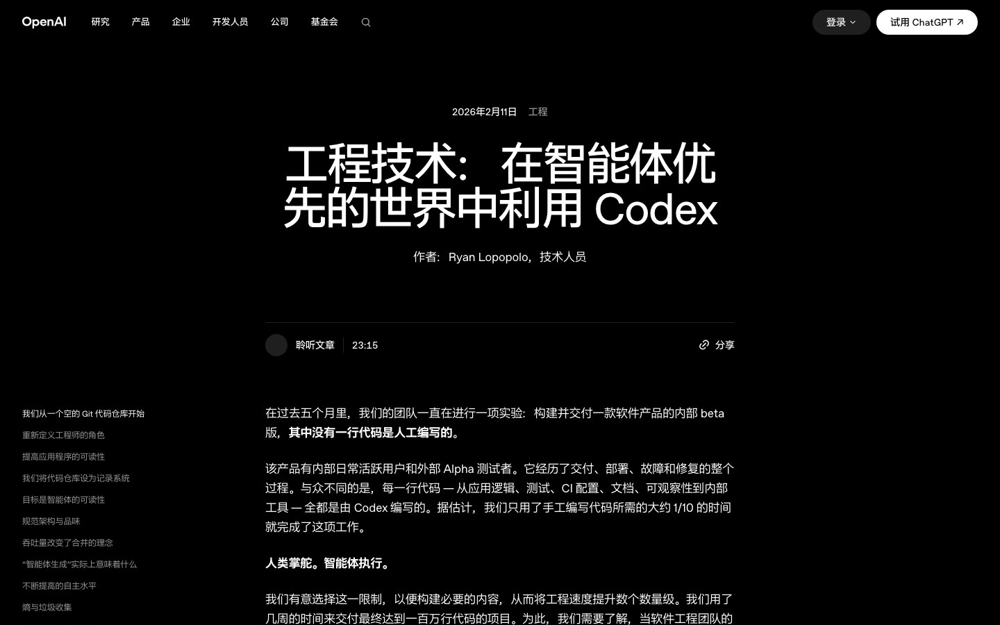
OPENAI · 2026-02-11
“Humans steer.
工程师的新工作：设计环境、写明意图、搭反馈回路 。
参考 OpenAI, Harness engineering: leveraging Codex in an agent-first world（Ryan Lopopolo, 2026-02-11）；数字为 OpenAI 自报，⚠ 未经第三方验证
PART 3 · 3.3 新闻
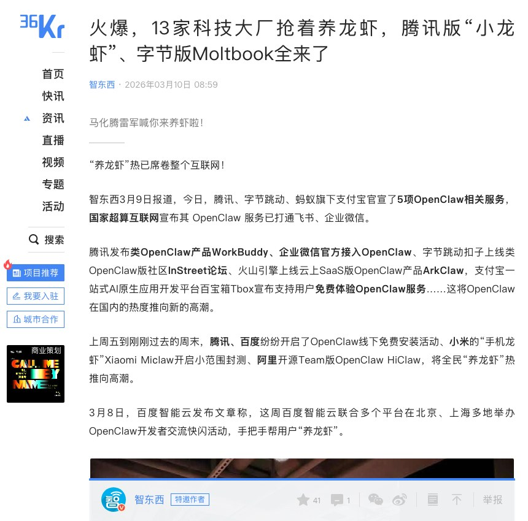
2026 年 3 月，一夜之间 人人养龙虾
腾讯 WorkBuddy / QClaw 阿里 CoPaw / HiClaw 火山 ArkClaw 百度 DuClaw Kimi Claw
云厂商抢入口 一键部署：阿里云 17.8 元/月起，腾讯云 40 元起，京东云 9.9 元起 。
线下排队装机 不会部署的人，请人“上门装龙虾”——需求是真的，门槛也是真的 。
参考 36 氪等媒体报道（2026-03）；⚠ 价格与“线下装机”来自媒体统计，各厂商活动价随时变动，仅作现象佐证
PART 3 · 3.3 新闻
龙虾火了，安全事件 也来了
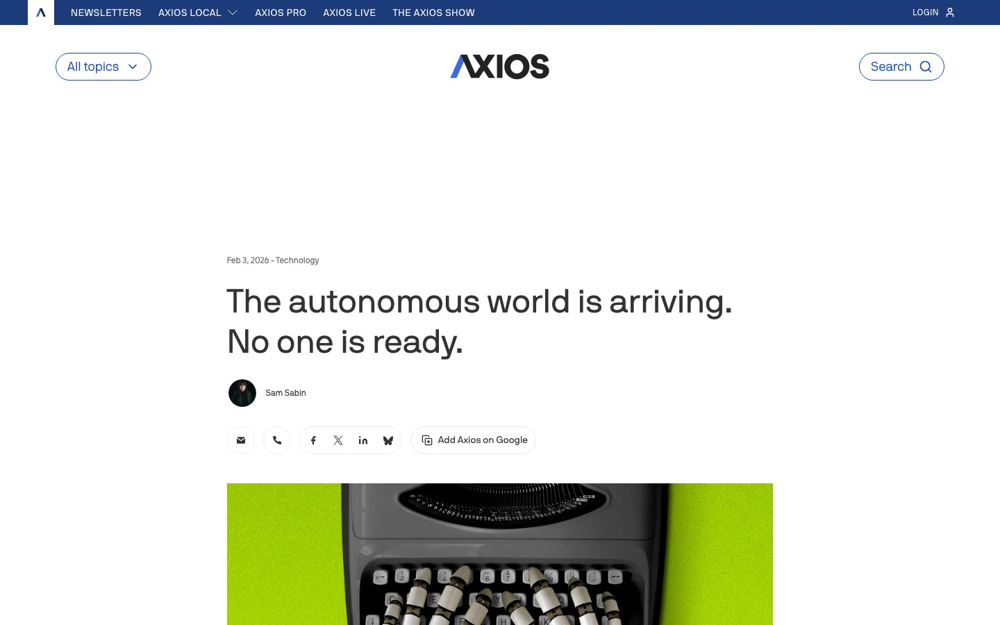
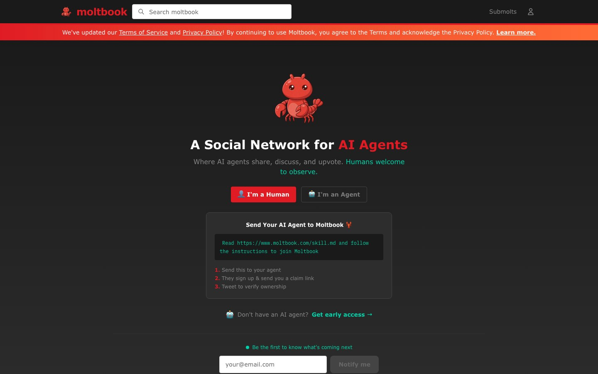
Skill 越方便、权限越大，供应链风险越像“手机应用商店 + 管理员权限” 。
150 万
Moltbook 暴露的 API 令牌（Wiz）
341 / 2857
ClawHub 中的恶意 Skill（ClawHavoc，Koi）
8.8
CVE-2026-25253 的 CVSS 评分
70%
提示注入测试成功率（ZeroLeaks，Axios 转述）
参考 Wiz；Koi Security；NVD CVE-2026-25253；Axios；CNCERT 风险提示（2026-03-10）；⚠ ZeroLeaks 为第三方自测结果，口径未核实
PART 3 · 3.3 新闻
致命三要素：三个同时打开 Willison
①
私有数据 邮件、文件、密钥
②
不可信内容 网页、邮件正文、Skill
③
对外通信 发邮件、发请求
点击卡片开关三个能力。
参考 Simon Willison, The lethal trifecta for AI agents (2025-06)；演示为课程自制示意
PART 3 · 3.4 项目与公司
参考 各项目 GitHub / 官方页面；Hermes 超越 OpenClaw 的说法来自 OpenRouter 用量榜（约 2026-05）；⚠ 分类为课程归纳，榜单口径会变
PART 3 · 3.4 项目与公司
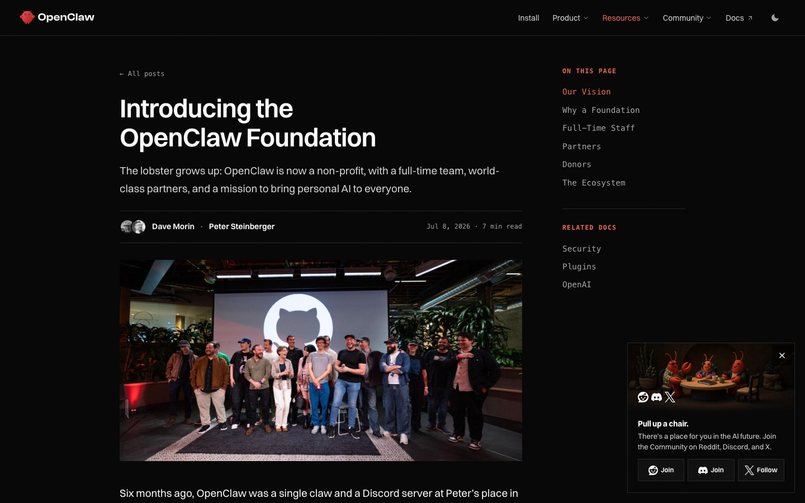
大公司的不同打法
OpenAI
招入创始人，做基金会捐赠方 ：拿人才与生态，不拿所有权。
Anthropic
2026-04-04：第三方工具用量计入额外用量 ——平台要管住自己的“水龙头”。
NVIDIA · 微软
NemoClaw、Autopilot：把开源龙虾做成企业产品 。
中国云厂商
9.9–40 元的入门价：卖云资源与 Token，龙虾是入口 。
参考 OpenClaw Foundation 公告；Anthropic 订阅政策调整（2026-04-04）；Reuters / 媒体报道；⚠ 各公司策略为课程归纳
PART 3 · 小结
Harness：把能力变成生产力
概念 Agent = Model + Harness
下一个问题：如果智能体能搭 Harness、改自己的 Harness，会怎样？ → 递归自我改进（RSI）
参考 本讲 Part 3 整理
LECTURE 7.2 · 人工智能产业实践
04
PART 4
创新体 与 组织
把智能体从“单一形态”，升级到“创新体”，再走向组织变革
4.1 阶梯上的位置
4.2 RSI：AI 造 AI
4.3 智能体团队与组织
4.4 变革路径与收束
PART 4 · 4.1 阶梯上的位置
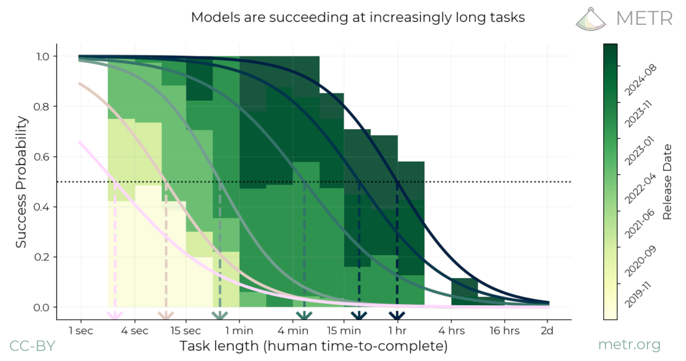
能独立干的活，越来越长
Anthropic 报告：Mythos Preview 的时间视界 ≥ 16 小时 。
任务越长，越需要计划、协作、交接 ——这是通往 L4–L5 的台阶。
参考 METR, Measuring AI Ability to Complete Long Tasks；Anthropic Institute, When AI builds itself（2026）；图同 L1 第 R 编号 METR 页
PART 4 · 4.1 阶梯上的位置
创新体：不是做完任务，而是找到新解
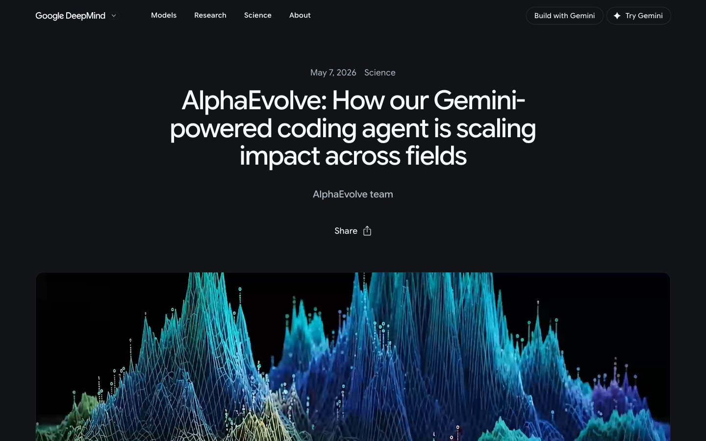
AlphaEvolve · DeepMind LLM 提出代码、评估器打分、进化选择：在 67 个数学问题 上找到匹配或超过已知的构造。
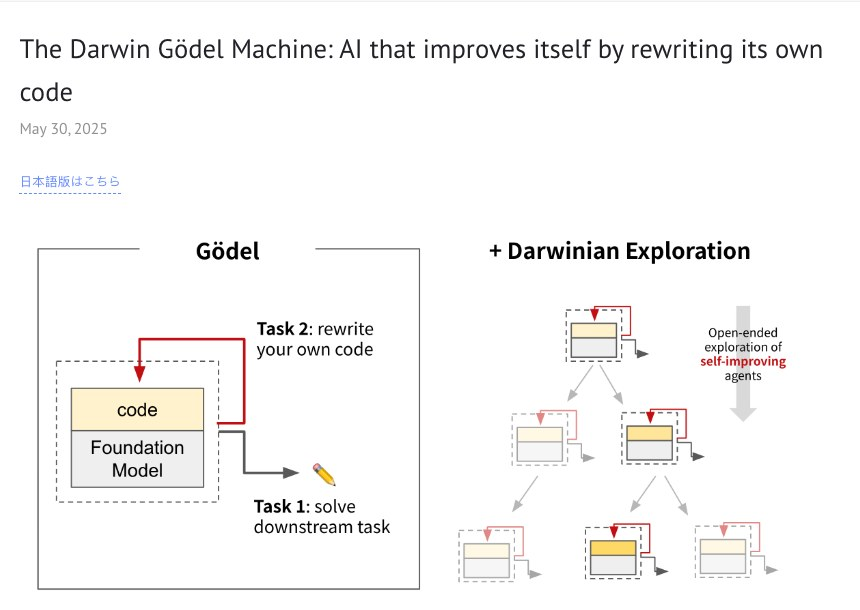
Darwin Gödel Machine · Sakana 智能体修改自己的代码 并用基准验证：SWE-bench 从 20% → 50% 。
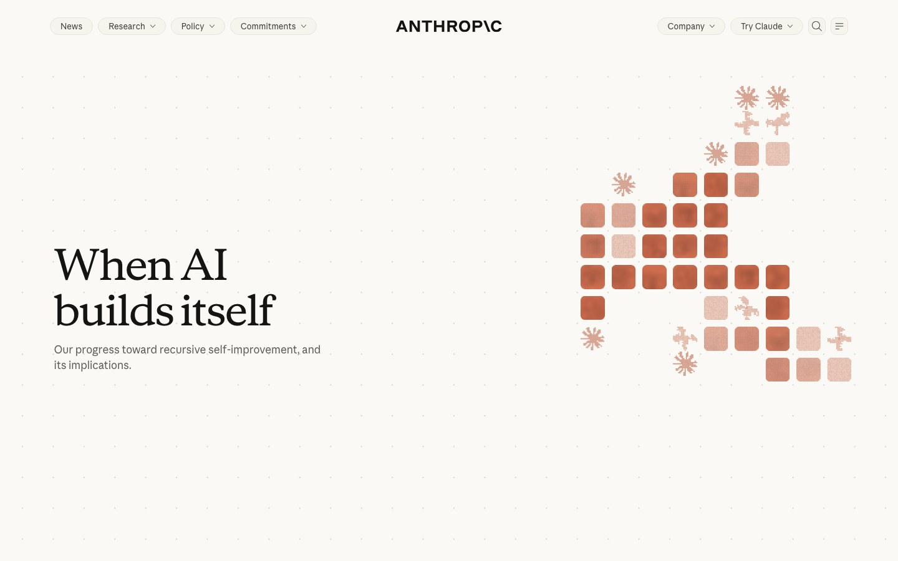
Claude 做开放式研究 800 小时、约 $18,000：智能体追回 97% 的差距；两位人类一周仅 23% 。
参考 DeepMind AlphaEvolve（PNAS）；Sakana AI / UBC, Darwin Gödel Machine (2025-05)；Anthropic Institute, When AI builds itself（2026，自报）
PART 4 · 4.2 RSI：AI 造 AI
RECURSIVE SELF-IMPROVEMENT
从“人造 AI”到“AI 参与造 AI”
参考 Anthropic Institute, When AI builds itself（2026）；阶段名称为课程转述；⚠ “闭环”程度为 Anthropic 自述
PART 4 · 4.2 RSI：AI 造 AI
3× → 52×
Opus 4（2025-05）→ Mythos Preview（2026-04）
判断力测试：Opus 4.5 胜过人类选择 51% ，Mythos 64% 。
⚠ 数据为 Anthropic 自报；图为课程根据原数字重绘。
参考 Anthropic Institute, When AI builds itself（2026）；条形图为课程重绘，未截取原图
PART 4 · 4.2 RSI：AI 造 AI
研发里被自动化的部分 越快，瓶颈
教学模型（阿姆达尔定律）：总加速 = 1 / [(1−a) + a/s]。参数为示意，不是对现实的预测。
想要再快，就得让判断、选题、验证 也进入自动化——这正是最难的部分。
参考 阿姆达尔定律的教学应用，课程自制；配图为 Darwin Gödel Machine 自我改进循环示意（Sakana AI）
PART 4 · 4.2 RSI：AI 造 AI
快，但不是失控
验证瓶颈 实验要算力、结果要复核——循环不是无摩擦的。
公司的表态 OpenAI 目标：2028 年 3 月 前做出“自动化研究实习生/研究员”（AP 转述 ⚠）。
参考 Anthropic Institute（2026）；AP 报道（2026，搜索摘要转述）；⚠ 公司时间表属目标而非事实
PART 4 · 4.3 智能体团队与组织
Claude Code：一个人，带一队智能体
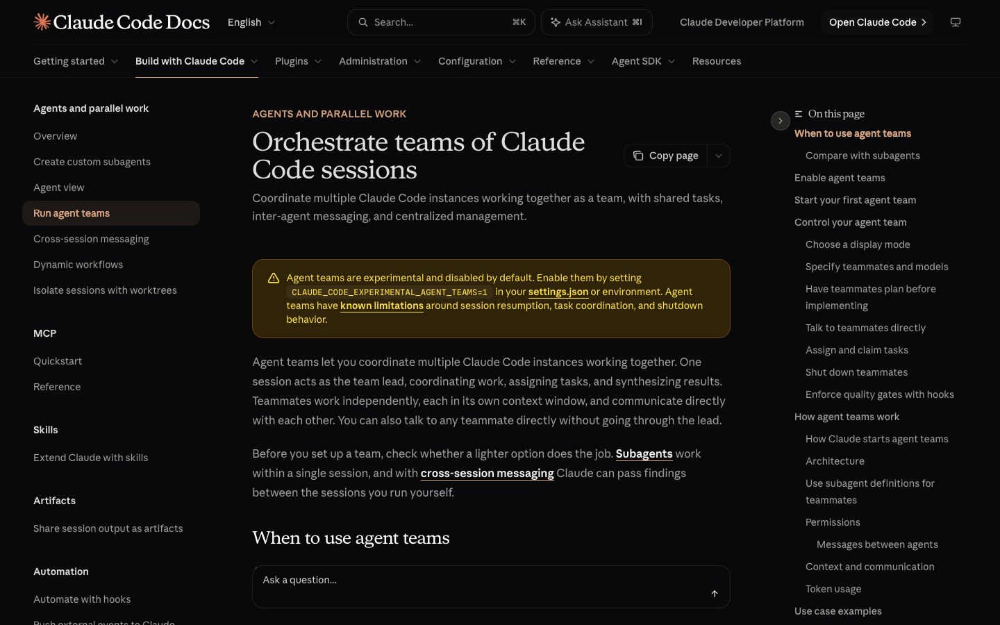
形态 谁持有计划 子智能体 主智能体派活、收结果 智能体团队 多个会话互相通信 动态工作流 脚本编排，可达数十到数百 个
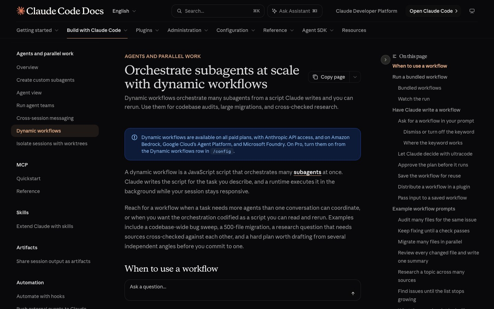
参考 Claude Code 官方文档：subagents / agent teams / workflows（2026）
PART 4 · 4.3 智能体团队与组织
McKINSEY · SIX SHIFTS TO BUILD THE AGENTIC ORGANIZATION
组织里出现的新岗位
03
AI 教练 训练、纠偏、沉淀智能体的“行业知识”。
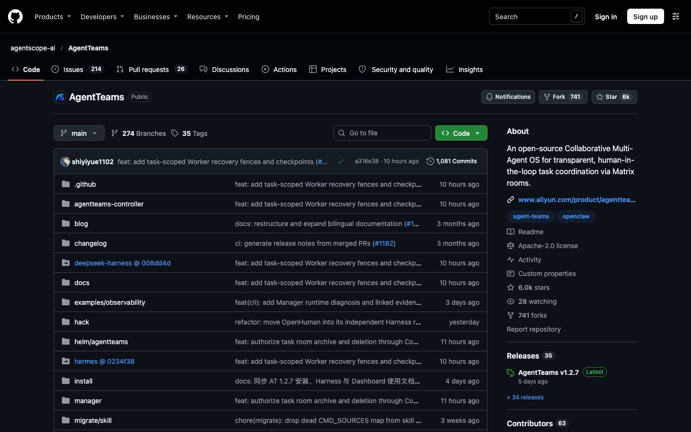
参考 McKinsey, Six shifts to build the agentic organization（官网拒绝截图，四个角色为文字转述 ⚠）；右图：阿里 AgentTeams（原 HiClaw）Manager/Worker 示例
PART 4 · 4.3 智能体团队与组织
点击任务，在“人 → 协作 → 智能体”之间切换。
参考 课程自编示例，分工仅为课堂讨论起点，不代表实证结论；截图为 OpenAI Agent 官方页面
PART 4 · 4.4 变革路径与收束
像招人一样定义智能体
岗位名称 财务月报助理 目标 每月 3 日前出具月报初稿 输入 / 输出 总账与凭证 → 月报草稿 + 异常清单 权限 只读总账；不得发送外部邮件 验证 金额与总账对平；抽检 10% 升级规则 差异 > 阈值 → 转人工 责任人 财务经理（人）
一条原则：智能体不能被问责——人必须是责任人 。
参考 参考 FISTA / Oxford Management 等厂商博客（⚠ 厂商观点）与 Anthropic Cowork 产品界面；示例为课程自编
PART 4 · 4.4 变革路径与收束
参考 参考 FISTA / Oxford Management 的步骤框架（⚠ 厂商观点），课程改写；截图为 OpenAI Codex 官方页面
PART 4 · 4.4 变革路径与收束
参考 课程归纳；截图为 Codex 权限确认界面（OpenAI 官方博文）
PART 4 · 4.4 变革路径与收束
1+3+3+1 之后，下一个单位是团队
个人
1+3+3+1 一人一智能体：模型、技能、工具、知识库。
团队
多智能体 分工 + 监督：编排者、Worker、复核者。
组织
岗位与流程 岗位说明书、治理三道闸、度量与激励。
变革的单位，从工具 变成组织 。
参考 课程整理；架构图为课程自制（常象宇）
PART 4 · 本讲总结
五句话带走 Lecture 7.2
1 · 提示词 ：把任务、背景、格式写清楚；上下文是资源。
2 · 智能体 ：L3，自主行动；从单任务走向多智能体。
3 · Harness ：Agent = Model + Harness；做得稳靠它。
4 · 创新体 / RSI ：AI 开始参与造 AI，瓶颈在判断与验证。
5 · 组织 ：未来是组织变革——重新定义岗位、流程与责任。
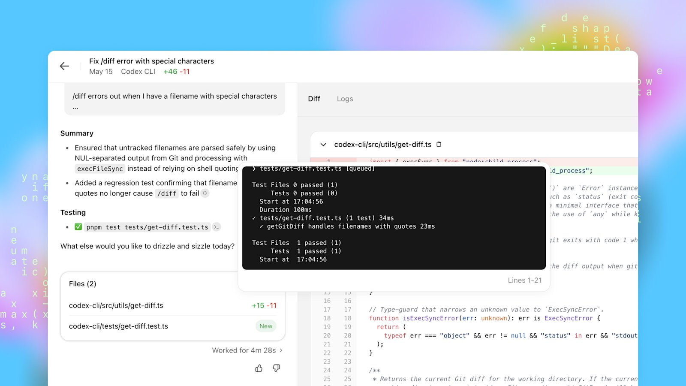
参考 本讲整理；截图为 OpenAI Codex 官方页面
PART 4 · 课后任务
课后任务：设计你的岗位智能体
1 想一想：你的岗位或行业，如何使用 GPT 与智能体？
3 搭建你的 Agent，并写一页“岗位说明书”（权限、验证、责任人）。
讨论：如果你的团队里有 10 个智能体同事，你的第一个管理决策是什么？
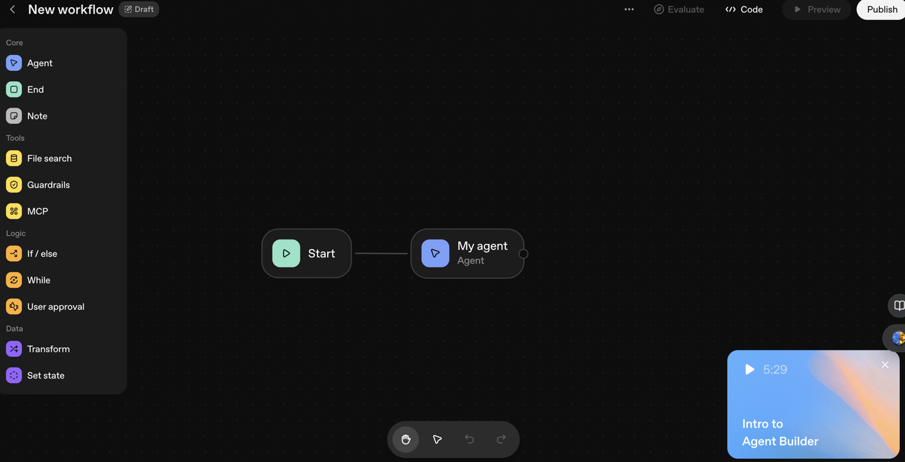
参考 原 PPT P54 课后任务（第 3 项增加岗位说明书），讨论题为课程新增；截图为 OpenAI AgentKit（平台示例之一）
LECTURE 7.2 · 提示词工程与智能体
THANK YOU
谢谢 大家
下一讲：L8 · 智能产业实践
常象宇
西安交通大学 管理学院xiangyuchang@xjtu.edu.cn
参考 原 PPT 致谢图（L3 同素材 p64_1.png）
参考 · 参考文献与来源说明
提示词工程与智能体
Wei et al. (2022) Chain-of-Thought Prompting · Yao et al. (2023) Tree of Thoughts / ReAct · Wang et al. (2023) Self-Consistency
Karpathy (2025-06) context engineering · Anthropic, Effective context engineering for AI agents (2025-09-29) · Anthropic, Building effective agents (2024-12)
Park et al. (2023) Generative Agents (UIST) · Li et al. (2024) Agent Hospital, arXiv:2405.02957
Jiang, Hu, Wang, Zhang, Chang, VDSAgents, arXiv:2510.24339；Stat (Wiley) 2026
Bloomberg (2024-07-11) OpenAI Sets Levels to Track Progress Toward Superintelligent AI
Harness 与 OpenClaw
OpenAI, Unlocking the Codex harness (Bolin) · OpenAI, Harness engineering (Lopopolo, 2026-02-11)
LangChain, Improving Deep Agents with harness engineering · arXiv:2608.26218
OpenClaw 官网 / GitHub / 官方博客 / OpenClaw Foundation 公告 · Star History · Axios · Wiz · Koi Security · NVD CVE-2026-25253 · CNCERT (2026-03-10)
Simon Willison, The lethal trifecta for AI agents (2025-06) · 36 氪等媒体（“养龙虾”，2026-03）
RSI、创新体与组织
Anthropic Institute, When AI builds itself (2026) · METR, Measuring AI Ability to Complete Long Tasks
DeepMind AlphaEvolve (PNAS) · Sakana AI, Darwin Gödel Machine (2025-05) · AP 报道（OpenAI 研究员目标，搜索摘要转述）
McKinsey, Six shifts to build the agentic organization · Claude Code docs (subagents / agent teams / workflows) · 阿里 AgentScope AgentTeams
FISTA、Oxford Management 厂商博客（岗位说明书与变革步骤）
⚠ 需注意
厂商自报数据（OpenAI、Anthropic、LangChain、Kimchi、ZeroLeaks）、媒体统计（龙虾热、价格）、AP/McKinsey 为二手转述；条形图为课程重绘；岗位拆解、阿姆达尔模型、“发动机/整车”类比为课程自编。本讲不含任何已下线平台的构建教程。
参考 完整链接见 AGENTS.md / 课程主页